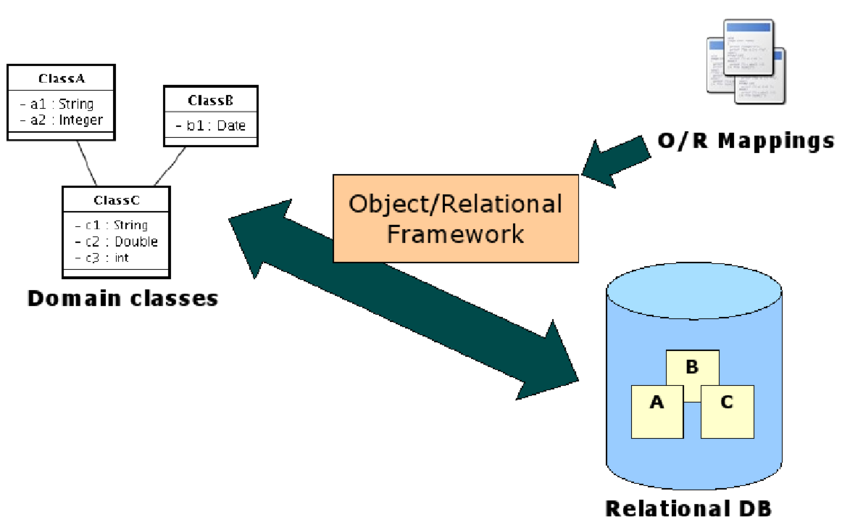

Bases de Datos
Sistemas Software Basados en Web
Bases de Datos
SQL vs no-SQL

Bases de datos No-SQL
Son base de datos para permitir 'BIG DATA', tipos de datos
complejos, con otro tipo de índices, distintas maneras de consulta,
escalabilidad, replicación, etc
| SQL | No-SQL |
|---|---|
| Tablas | Hashes, listas |
| Datos estructurados, consistencia | Datos menos estructurados, dinamicidad |
| Escalabilidad vertical | Escalabilidad horizontal |
| Contabilidad, Facturación, Almacen, Personal, Tiendas on-line, etc | Documentos, Foros, Redes Sociales, Datos Distribuidos, etc |


Base de datos mongoDB
Es una base de datos, orientada a documentos estilo JSON, que incluye información del tipo de dato
Una base de datos está formada por colecciones, que son un conjunto de documentos


Base de datos mongoDB
MongoDB CRUD Introduction
Getting Started With MongoDB
MongoDB Tutorial
MongoDB Tutorial for Beginners: Learn in 7 Days
PyMongo
import datetime
from pymongo import MongoClient
client = MongoClient('mongodb://localhost:27017/')
post = {"author": "Mike",
"text": "My first blog post!", # en SQL serian 2 tablas
"tags": ["mongodb", "python", "pymongo"],
"date": datetime.datetime.utcnow()}
db = client.test_database # base de datos
posts = db.posts # colección
post_id = posts.insert(post) # documento
query = posts.find_one({"_id": post_id}) # consulta
query = posts.find_one({"author": "Mike"})
# Insertar otros datos (distintos)
new_posts = [{"author": "Mike",
"text": "Another post!",
"tags": ["bulk", "insert"],
"date": datetime.datetime(2009, 11, 12, 11, 14)},
{"author": "Eliot",
"title": "MongoDB is fun",
"text": "and pretty easy too!",
"date": datetime.datetime(2009, 11, 10, 10, 45)}]
posts.insert(new_posts)
# Find devuelve un cursor iterable
for post in posts.find({"author": "Mike"}):
print (post['text'])
# Otras querys
d = datetime.datetime(2009, 11, 12, 12)
posts.find({"date": {"$lt": d}}).sort("author")
# Creando índices para mayor rapidez (y tamaño de la BD)
from pymongo import ASCENDING, DESCENDING
posts.create_index([("date", DESCENDING), ("author", ASCENDING)])
Django Model
Django incluye un ORM para acceder a la DB SQL
Mongoengine
# Mongoengine
# Object Document Model
import datetime
from mongoengine import *
connect('mongoengine_test', host='localhost', port=27017)
class Post(Document):
title = StringField(required=True, max_length=200)
content = StringField(required=True)
author = StringField(required=True, max_length=50)
tags = ListField(StringField(max_length=30))
published = DateTimeField(default=datetime.datetime.now)
post_1 = Post( title='Sample Post',
content='Some engaging content',
author='Scott',
tags=['a', 'b']
)
post_1.save()
post_1.title = 'A Better Post Title'
post_1.save()
for post in Post.objects:
print(post.title)
for post in Post.objects(tags='mongodb'):
print(post.title)
post_1.delete()
Otras BD NO-SQL
- Redis
(más simple y rápida, para cache)
- Elasticsearch
(para motores de búsqueda)
- Hadoop
(big data)